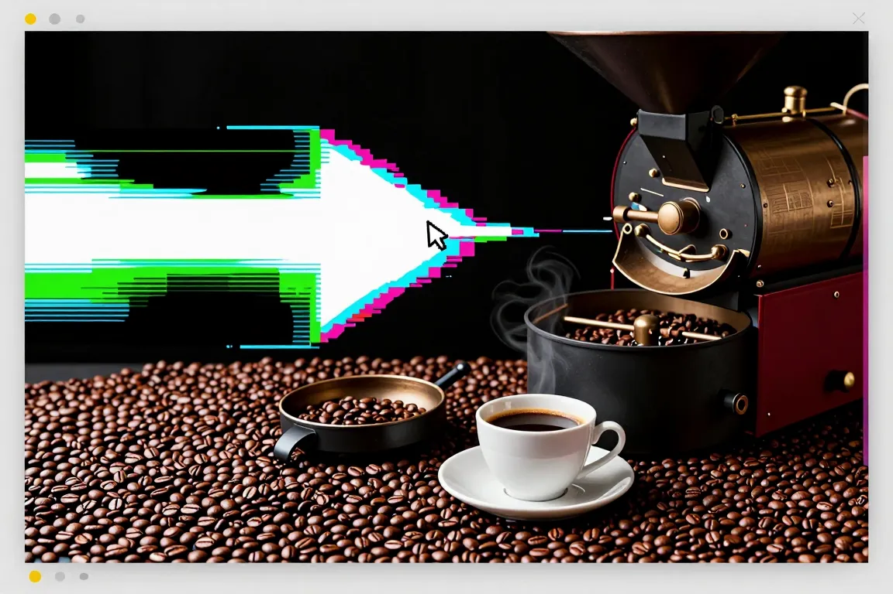

Raske, overfylte klipp med delte fargekanaler, gjentatte bilder, datamosh, skarpt blink og rot fra det gamle nettet. Det vokste med digicore-musikkscenen på SoundCloud, Discord og korte videoapper.

Kjerneidé
Overbelast signalet: vis feilen, gjentakelsen og blinket til feilen blir stilen.
Designprinsipper
Del fargekanalene med 4px til 12px i motsatte retninger på alle nøkkelbilder.
Klipp hvert 4. til 12. bilde ved 30 bps og gjenta samme bilde 2 til 4 ganger.
Bruk varme farger: syregrønn (#39FF14), magenta (#FF00AA) og cyan (#00E5FF) på svart.
Fyll bildet med 5 eller flere lag: tekst, stjerner, pekere, klistremerker og gamle nettikon.
Sett displaytekst på 48px til 120px i en fet skrift, med en strek på 3px i en annen farge.
Legg til skannelinjer på 2px ved 12 % dekning og støy ved 8 %.
Legg til en blinkadvarsel for flimring over 3 blink i 1s.